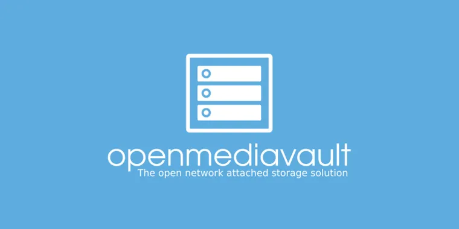

Projets personnel
Configuration d'un serveur de stockage (NAS).

- Contexte : Travail pratique réalisé en autodidacte.
- Objectifs :
- Installer et configurer le serveur sur le réseaux local.
- Configurer un accès distant sécurisé pour accéder aux fichiers en dehors du réseau local.
- Missions :
- Installation du système d'exploitation OpenMediaVault.
- Configuration des partages réseau via Samba pour permettre aux utilisateurs d'accéder aux données.
- Mise en place d'un RAID 1 sur les disques durs.
- Mise en place d'un antivirus qui analyse chaque fichiers présent sur le serveur.
- Création et gestion des utilisateurs avec des permissions spécifiques pour chaque dossier ou fichier.
- Configuration d’un accès sécurisé via VPN et SSH pour l'administration à distance.
- Surveillance de l'état du matériel et des disques grâce au système d'exploitation.